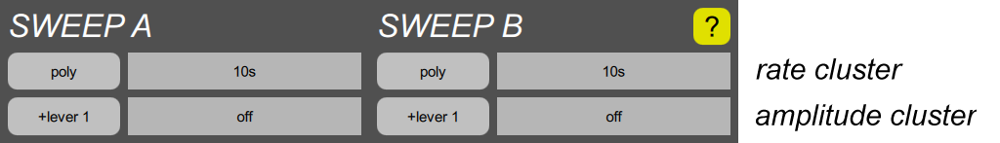

SWEEP section

A “sweep” generator is what many other synthesizers call a “low frequency oscillator”, or simply “LFO”. Each of the two sweeps outputs repetitive low frequency patterns, most commonly sine waves, for producing effects such as vibrato, but also for triggering envelopes or running the arpeggiation keyboard algorithms. The sweep parameters fall into two categories, so each sweep has two parameter clusters:
- The rate cluster contains parameters that pertain to rate or time. The button shows the current sweep mode parameter, and the slider controls the basic rate.
- The amplitude cluster contains parameters that pertain to amplitude or shape. The button shows the current amplitude mod select parameter, and the slider controls the mod depth.